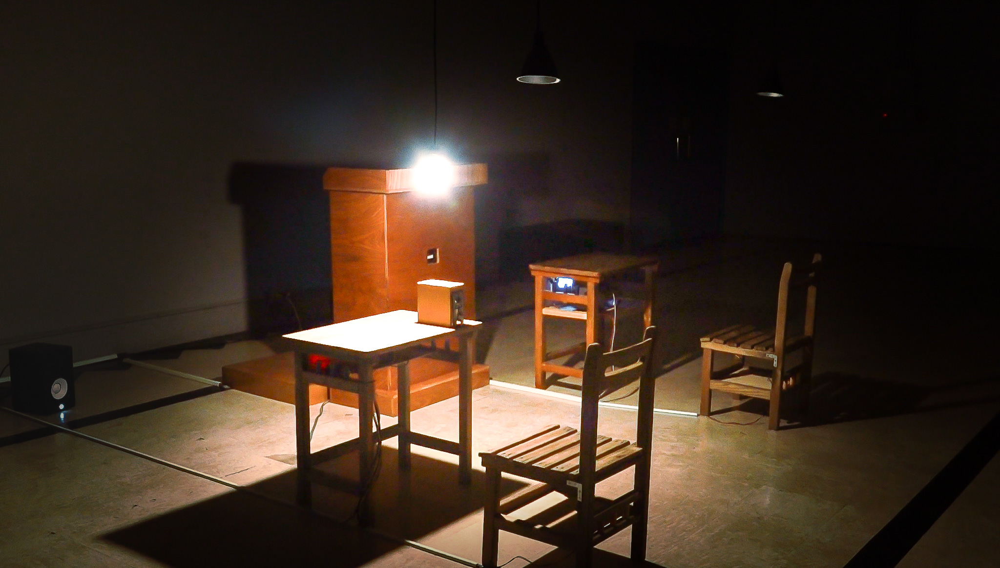
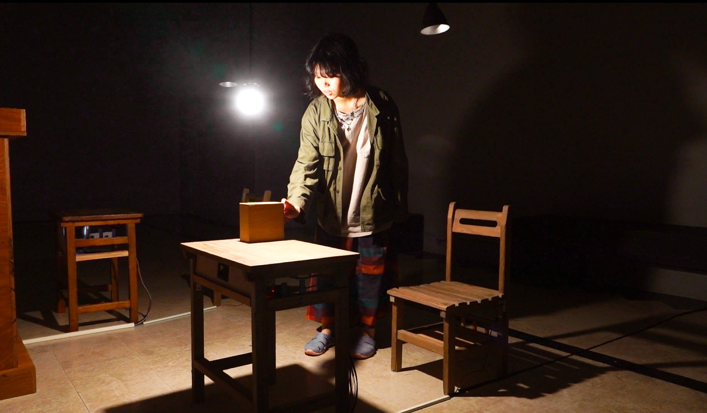
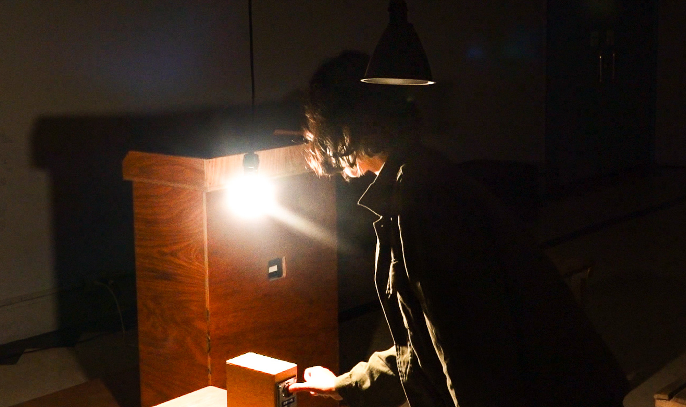
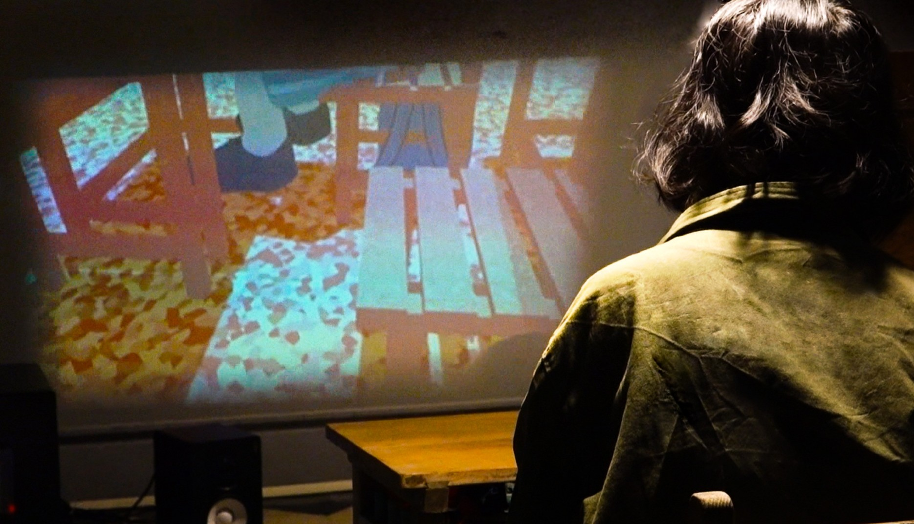
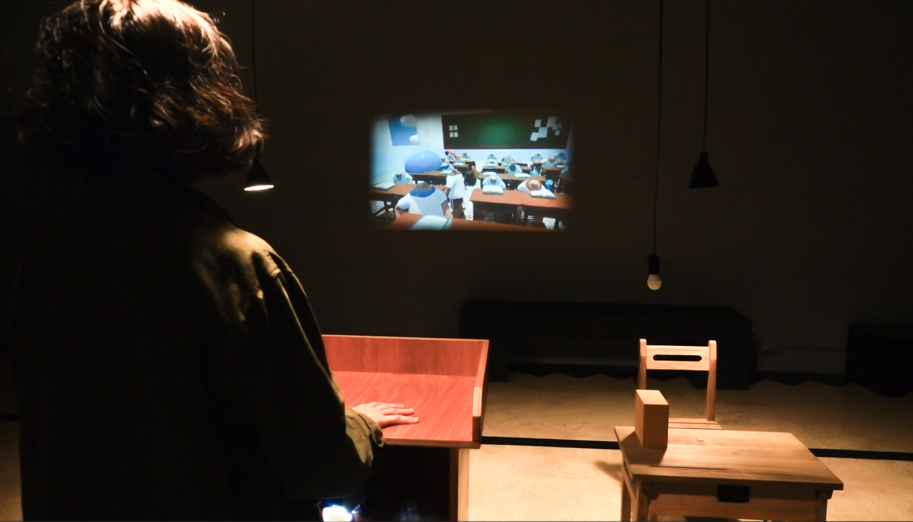
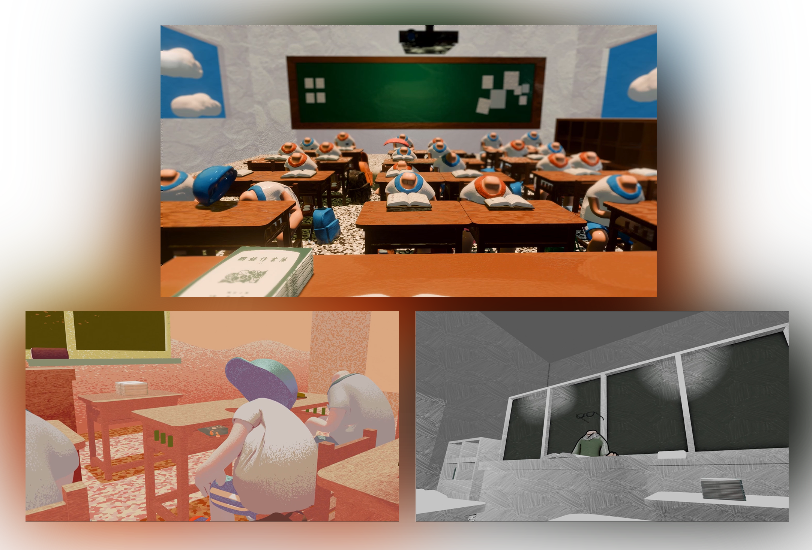

以童年經歷為出發，呈現兒時校園裡師生、同儕之間因片面資訊所造成的誤會事件，及被掩蓋真相的不愉快、冤枉之情。
一開始聚光在投幣機上。投幣之後，三個座位的聚光燈亮起，可以透過靠近座位看到該角色視角的動畫。
在不同座位播放動畫，以不同角色視角觀看同一事件。不同的攝影機角度，所呈現的劇情細節、美術風格也有所不同。
負責整體視覺統籌、角色設定，核心3D動畫製作與動態設計以及整體專案的進度控管。
主導實體裝置設計、撰寫感應器互動裝置邏輯、空間動線規劃，以及硬體材質的搭建。
擔任音樂總監負責專案的整體配樂與音效設計，同時撰寫影像播放邏輯。
為了讓觀展者能真正沉浸在「被掩蓋的真相」中，我們決定打破傳統平面的觀影方式。從草圖設計到木作切割，團隊親手打造了帶有童年記憶符號的座位區與投幣機。
我們在座位下方巧妙隱藏了投影設備與感測器，確保硬體與動畫的結合能夠無縫觸發，創造出最具張力的互動體驗。
在動畫製作階段，最大的挑戰在於如何用「三個不同的視角」去重構同一個事件。我們針對每個角色的心理狀態，刻意採用了不同的色調與線條風格。
從最初的草稿分鏡，到逐格動畫的繪製，我們不斷測試光影的表現，確保當觀眾靠近座位時，視覺上能帶來最強烈的情感共鳴。
